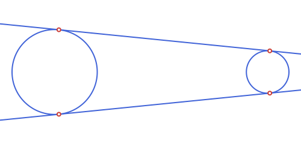
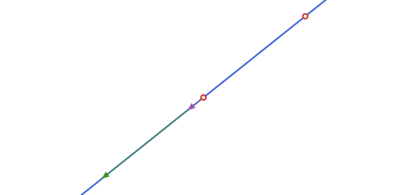
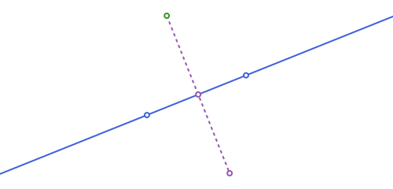
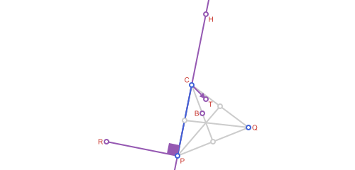
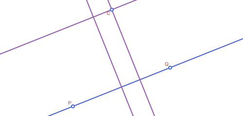
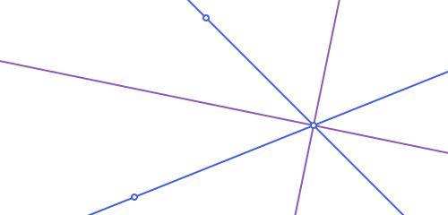

Points, Lines & Rays
These are the building blocks everything else in the package is made of.
- A point is
APPoint, and a vector (a free direction, with no fixed location) is the separate typeAPVector. Both wrap the same(x, y)coordinate pair, but keeping them distinct meansAPVectorcan carry its own meaning (a direction, e.g. whatdirectionreturns) without being confused for a location. Arithmetic between them stays permissive on purpose:APPoint - APPointstill gives back anAPPoint(not a vector), so familiar formulas like2*about - pkeep working exactly as before — see the table below. - A segment is a finite piece of straight line between two points:
APSegment. - A line (
APLine) is the infinite straight line through two points, and a ray (APRay) is the half-line starting at an origin and passing through a second point. Both are small immutable structs holding the two defining points.
All four are part of the package's own AP-prefixed type hierarchy (see Apollonius.jl for the full tree): APPoint/APVector sit directly under APObject, while APSegment/APLine/APRay are all APCurves.
| Type | Represents | Fields |
|---|---|---|
APPoint | a point in the plane | p[1], p[2] (x, y) |
APVector | a free direction/displacement | v[1], v[2] (x, y) |
APSegment | the segment [p1, p2] | s[1], s[2] (also .p1, .p2) |
APLine | the infinite line through p1, p2 | l[1], l[2] (also .p1, .p2) |
APRay | the half-line from origin through through | r[1], r[2] (also .origin, .through) |
None of APSegment/APLine/APRay carry a direction magnitude — an APLine through p1 and p2 is the same object as the line through p2 and p1 — but APSegment and APRay do remember which of their two points comes first, since that is what makes them finite/one-sided in the first place.
APPoint/APVector/APSegment/APLine/APRay all support destructuring (x, y = p, p1, p2 = s) for convenience — including flattening a whole collection of them into their defining points at once, via Iterators.flatten:
using Apollonius
c1, c2 = APCircle2(APPoint(0.0, 0.0), 2.0), APCircle2(APPoint(10.0, 0.0), 1.0)
l1, l2 = external_tangent_lines(c1, c2)
collect(Iterators.flatten([l1, l2])) # the 4 points of tangency, in one Vector{APPoint}4-element Vector{APPoint{2, Float64}}:
[0.2, 1.98997487421324]
[10.1, 0.99498743710662]
[0.2, -1.98997487421324]
[10.1, -0.99498743710662]
But every APObject/APTransform (this one included) is always a scalar for broadcasting purposes, so translate.(p, [v1, v2]) or intersection.(l, [c1, c2]) repeats the single shape against each element of the other argument, rather than Julia's usual f.(x) mistaking an iterable x for a collection to broadcast over its own components.
Creating them
using Apollonius
A = APPoint(3.0, 4.0)
O = APPoint(0.0, 0.0)
s = APSegment(O, A) # the segment from O to A
l = APLine(O, A) # the infinite line through O and A
r = APRay(O, A) # the half-line starting at O, through A
distance(O, A)5.0distance(O, A) is 5.0: with A = (3, 4), this is just the classic 3-4-5 triangle. APSegment, APLine and APRay all wrap the same two points here — what differs is only how far they extend and what other functions are willing to do with them (e.g. on_segment only makes sense for an APSegment, slope_angle treats APLine and APRay as pointing one way and an APSegment as pointing from its first point to its second).
Points vs. vectors
A point minus a point is still a point, not a vector — A - O above stays an APPoint. This is a deliberate choice: it keeps existing point-arithmetic formulas (like a reflection written as 2*about - p) working exactly as they read, without forcing every subtraction through a vector type first. Where a genuine direction is called for — the result of direction below, for instance — the package hands back an actual APVector instead:
d = direction(l) # an APVector, not an APPoint
typeof(d)APVector{2, Float64}Both types support the same arithmetic and the standard linear-algebra functions norm, dot and normalize — re-exported from LinearAlgebra purely so using Apollonius alone is enough to get the full vector toolkit, without a separate using LinearAlgebra:
norm(d) # 5.0
normalize(d) # (0.6, 0.8): unit vector, same direction
dot(d, APVector(1.0, 0.0)) # 3.03.0Giving a vector a position: APEquipollentVector
An APVector is deliberately positionless — that's exactly what makes it the right type for direction(l), a normal, or anything else that's purely "which way and how far," never "where." That positionlessness means a bare APVector has no APBoundingBox at all (isempty(APBoundingBox(::APVector)) is always true), so it never contributes to @to_luxor_picture's fit-to-canvas sizing, and it can't be shifted into place the way a positioned shape can (there's nowhere to shift it to) — but it still gets scaled and flipped to the picture's own scale, so path(v, from=anchor) (with v and anchor both built inside the same block) comes out at the right length and orientation, anchored wherever anchor itself lands.
What a bare vector still can't do is stand as one positioned thing: it has no bounding box of its own to size a picture by, can't be translated anywhere, and can't be transformed as a single unit together with a point that's tracked separately alongside it. APEquipollentVector (the classical "vector equipolente": a representative of a free vector, tied to a point of application) is the fix for that — it wraps a vector and the point it's applied at as one object, with a real, non-empty bounding box, and transforms fully like any other APCurve:
ev = APEquipollentVector(d, O) # d applied at O
APBoundingBox(ev) # a real box now, unlike APBoundingBox(d)APBoundingBox([0.0, 0.0] .. [3.0, 4.0])tip(ev) is ev.point + ev.vector, computed on demand. norm/ normalize/dot all work the same way as on a bare APVector (acting on ev.vector; normalize keeps ev.point fixed), and the usual rotate/translate/homothety/reflection quartet works too — translate in particular moves ev.point, something a bare APVector (having no position to begin with) can never do:
translate(ev, APVector(1.0, 1.0)) # ev.point moves; ev.vector itself doesn'tAPEquipollentVector(⟨3.0, 4.0⟩, [1.0, 1.0])homothety scales ev.point about a center and ev.vector's own length together, matching how the whole configuration grows or shrinks as one piece:
homothety(ev, 2.0, O) # both O and the vector scale togetherAPEquipollentVector(⟨6.0, 8.0⟩, [0.0, 0.0])APVector(ev) unwraps back to the bare, positionless vector (mirroring APVector(::APPoint)), and — more usefully — every translate method that already accepts a bare APVector accepts an APEquipollentVector in its place too, driven by ev.vector and ignoring wherever ev itself happens to be anchored; p + ev (point arithmetic, not a call to translate) is the same shorthand for a plain APPoint:
APVector(ev) # unwraps back to the bare vector -- same as d
translate(A, ev) # same as translate(A, d): ev's own point is ignored[6.0, 8.0]Putting one inside a @to_luxor_picture! block and drawing it with path(ev; as=:arrow) (see Drawing with Luxor.jl) is what correctly scales/places it:

Polar coordinates
polar_point builds a point from a distance and an angle (radians, counterclockwise from the positive x-axis) instead of x/y — and polar_point_deg is the same with the angle in degrees. Both require an explicit center (there's no zero-argument default here, to avoid ambiguity with Real-only single-argument calls elsewhere in the package):
Bpolar = polar_point_deg(4.0, 40.0, O) # 4 units out from O, at 40°
distance(O, Bpolar) # 4.0, regardless of the angle3.9999999999999996This is exactly the point/angle/modulus relationship slope_angle and distance give you the other way around: polar_point(distance(O, p), slope_angle(APLine(O, p)), O) recovers p (for p != O).
Direction, slope and predicates
direction(l) # (3.0, 4.0) — l.p2 - l.p1, as an APVector
rad2deg(slope_angle(l)) # ≈ 53.13°
is_collinear(O, A, APPoint(6.0, 8.0))
on_line(APPoint(6.0, 8.0), l)
on_segment(APPoint(6.0, 8.0), s) # false: beyond Afalse| Function | Returns | Meaning |
|---|---|---|
direction | APVector | non-normalized direction of an APLine/APRay/APSegment |
slope_angle | angle | atan(dy, dx) of that direction, in radians |
is_collinear | Bool | do three points lie on a common line? |
is_parallel / is_perpendicular | Bool | relation between two lines |
on_line / on_segment / on_ray | Bool | is a point on this line / this finite segment / this half-line? |
side_of_line | -1, 0 or 1 | which side of a line a point falls on |
l_horiz = APLine(APPoint(0.0, 0.0), APPoint(4.0, 0.0))
side_of_line(APPoint(2.0, 1.0), l_horiz) # 1 : "above"
side_of_line(APPoint(2.0, -1.0), l_horiz) # -1 : "below"-1l_vert = APLine(APPoint(0.0, 0.0), APPoint(0.0, 4.0))
is_parallel(l, APLine(APPoint(1.0, 0.0), APPoint(4.0, 4.0))), is_perpendicular(l_horiz, l_vert)(true, true)r = APRay(APPoint(0.0, 0.0), APPoint(4.0, 0.0))
on_ray(APPoint(10.0, 0.0), r) # true: ahead of the origin, same direction
on_ray(APPoint(-1.0, 0.0), r) # false: on the line, but behind the originfalseon_line/on_segment/on_ray are also exactly what Base.in uses under the hood, so the more natural p in l reads just as well:
APPoint(6.0, 8.0) in l, APPoint(10.0, 0.0) in r(true, true)Distance to a line, segment or ray
distance also works between a point and any of APLine, APSegment or APRay — the perpendicular distance to the infinite line in the first case, but clamped to the finite extent for the other two (so a point "past the end" measures to the nearest endpoint, not along the infinite extension):
far_point = APPoint(10.0, 10.0)
distance(far_point, l), distance(far_point, s), distance(far_point, r)
# perpendicular to the infinite line; clamped to the finite segment [O,A]; clamped to the ray(2.0, 9.219544457292887, 10.0)on_line/on_segment/on_ray each also take just the line/segment/ray (no point) to build a reusable one-argument predicate, for filter:
pts = [APPoint(2.0, 0.0), APPoint(2.0, 1.0), APPoint(-1.0, 0.0)]
filter(on_ray(r), pts) # only the point that's on r1-element Vector{APPoint{2, Float64}}:
[2.0, 0.0]Projection, reflection and the perpendicular foot
projection drops a point onto a line at a right angle; reflection mirrors a point through another point (its use for mirroring across a line is: project first, then reflect through the foot).
P, Q = APPoint(1.0, 1.0), APPoint(6.0, 3.0)
l = APLine(P, Q)
C = APPoint(2.0, 6.0)
foot = projection(C, l) # the perpendicular foot of C on l
Cref = reflection(C, foot) # C mirrored through that foot — i.e. across l[5.172413793103448, -1.931034482758621]
projection also takes an angle keyword (radians, default pi/2, measured counterclockwise from l's own direction) for the oblique projection of p onto l — the point where a line through p at that angle meets l, instead of the perpendicular:
projection(C, l; angle=pi / 2) == foot # pi/2 is the ordinary case
projection(C, l; angle=pi / 3) # a genuinely oblique projection[1.2967144497652765, 1.1186857799061105]angle must be strictly between 0 and π — at either end the projecting line would be parallel to l itself, so there'd be no single intersection point:
try
projection(C, l; angle=0.0)
catch e
e
endArgumentError("projection: angle must be strictly between 0 and π (got 0.0)")Like the predicates above, projection(l; angle=...) (no point) builds a reusable one-argument function, for map/|>:
map(projection(l), [C, P, Q]) # project a whole collection onto l at once3-element Vector{APPoint{2, Float64}}:
[3.586206896551724, 2.0344827586206895]
[1.0, 1.0]
[6.0, 3.0]Rotation, homothety and translation
rotate turns a point about a center by an angle (radians, counter-clockwise); homothety scales it by a factor k about a center (k = -1 is a point reflection, 0 < k < 1 shrinks towards the center); translate shifts it by an APVector — the fourth member of this quartet, and the only one with no center (a translation has none). rotate/homothety default to the origin when no center is given.
rotate(C, pi / 2, P) # C rotated 90° about P
homothety(C, 2.0, P) # C scaled by 2 about P
translate(C, APVector(1.0, -1.0)) # C shifted by (1,-1)
barycenter([P, Q, C], [1.0, 1.0, 2.0]) # weighted average of the three[2.75, 4.0]
Parallels, perpendiculars and bisectors
midpoint(P, Q) # (3.5, 2.0): the plain average of the two
parallel_through(l, C) # line through C, parallel to l
perpendicular_through(l, C) # line through C, perpendicular to l
pb = perpendicular_bisector(P, Q) # perpendicular to [P,Q] through its midpointAPLine([3.5, 2.0] -> [1.5, 7.0])
angle_bisectors is the analogous construction for two intersecting lines: it returns both bisectors (they are always perpendicular to each other), as a 2-element vector.
xaxis = APLine(APPoint(0.0, 0.0), APPoint(4.0, 0.0))
yaxis = APLine(APPoint(0.0, 0.0), APPoint(0.0, 4.0))
angle_bisectors(xaxis, yaxis) # the two diagonals y = x and y = -x2-element Vector{APLine{2, Float64}}:
APLine([0.0, 0.0] -> [1.0, 1.0])
APLine([0.0, 0.0] -> [1.0, -1.0])
Angles
Under the hood, angles between two vectors come from two free functions: angle_between(u, v) (signed, counterclockwise from u to v, in (-π, π]) and angle_at(vertex, p1, p2) (unsigned, in [0, π]) — use these directly when you just need a number and not something to pass around.
angle_between(APVector(4.0, 0.0), APVector(0.0, 4.0)) # π/21.5707963267948966APAngle2 wraps up the "angle at a vertex between two rays" idea into a small struct (vertex, a, b) so it can be passed around and measured without repeating the three points everywhere — measure/abs on an APAngle2 are exactly angle_between/angle_at on its two defining vectors. Unlike a bare number, it's also a genuine region of the plane (it's part of the APSet family): p in ang tests whether p falls in the infinite wedge swept counterclockwise from a to b. It's oriented: APAngle2(O, P1, P2) and APAngle2(O, P2, P1) have the same abs but opposite sign.
O = APPoint(0.0, 0.0)
P1, P2 = APPoint(4.0, 0.0), APPoint(0.0, 4.0)
ang = APAngle2(O, P1, P2)
rad2deg(measure(ang)) # 90.0 — signed, counterclockwise from a to b
abs(ang) # 1.5707... — the unsigned angle, in [0, π]
is_direct(ang) # true: measure(ang) > 0
(O + APVector(1.0, 1.0)) in ang # true: inside the wedgetruenormalized_measure is measure shifted into [0, 2π) instead of (-π, π], for when you'd rather not deal with negative angles. Swapping a and b flips the sign of measure (and is_direct) but leaves abs unchanged:
ang2 = APAngle2(O, P2, P1)
measure(ang2), is_direct(ang2) # (-π/2, false) — same magnitude, opposite orientation
normalized_measure(ang2) # -π/2 + 2π = 3π/2 rad (270°), shifted into [0, 2π)4.71238898038469reverse(ang) does exactly that swap for you (ang2 == reverse(ang) above) — handy when you've built an APAngle2 from points that already live in a mirrored coordinate space (e.g. after @to_luxor_picture's default flip=true, see Drawing with Luxor.jl) and need the wedge that matches what you'd see drawn, rather than its mirror image:
reverse(ang) == ang2, reverse(reverse(ang)) == ang(true, true)angle_trisectors is the free-function analogue of angle_bisectors: given a vertex and two points, it returns the two rays that cut ∠(p1, vertex, p2) into three equal parts.
rays = angle_trisectors(O, P1, P2) # 2 rays, each 30° apart (a 90° angle, /3)2-element Vector{APRay{2, Float64}}:
APRay([0.0, 0.0] -> [3.464101615137755, 1.9999999999999998])
APRay([0.0, 0.0] -> [2.0000000000000004, 3.4641016151377544])distance(p, ang) follows the same mode = :region/:boundary convention as the other APSet types (see Unbounded Regions: Half-Planes, Strips & Angles): 0.0 from inside the wedge with the default :region, or always the distance to the nearer of the two bounding rays (vertex -> a, vertex -> b) with :boundary:
distance(APPoint(1.0, 1.0), ang) # 0.0: inside the wedge
distance(APPoint(-1.0, -1.0), ang; mode=:boundary) # distance to the nearer ray1.4142135623730951rotate, reflection and homothety transform vertex, a and b pointwise, so abs(ang) is always preserved, and so is the sign of measure — for every one of them, including reflection. That's a deliberate consequence of APAngle2 being a real region rather than a bare signed value: reflecting about an APLine (a true mirror) swaps a and b internally so the wedge comes back as a genuine mirror image of the original (not its complement), and that swap is exactly what keeps measure's sign unchanged too — the same convention APCircularArc2/APEllipticArc2 use for the same reason.
measure(rotate(ang, pi / 3)) ≈ measure(ang) # sign preserved
measure(reflection(ang, APPoint(1.0, 1.0))) ≈ measure(ang) # point reflection
measure(reflection(ang, APLine(O, APPoint(1.0, 1.0)))) ≈ measure(ang) # line reflection tootrueConversely, rotate(obj, ang::APAngle2, ...) goes the other way: it rotates some other object by measure(ang), driven directly by an APAngle2's own measure instead of a bare number — a stand-in for rotate(obj, measure(ang), ...), useful once you already have the angle as an APAngle2 (say, from angle_between's caller building one to measure/display it) and don't want to unwrap it by hand first:
rotate(P1, ang, O) == rotate(P1, measure(ang), O) # true: same rotation, just driven by ang directlytrueHarmonic conjugate and the golden ratio point
Given A, B on a line and a third point P on that same line, harmonic_conjugate returns the point P' for which (A, B; P, P') is a harmonic range — i.e. P and P' divide [A,B] internally and externally in the same ratio. golden_ratio_point is the special point that divides [A,B] in the golden ratio, A + (B-A)/φ.
A, B = APPoint(0.0, 0.0), APPoint(8.0, 0.0)
P = APPoint(2.0, 0.0)
Pgold = golden_ratio_point(A, B) # ≈ (4.944, 0)
Pconj = harmonic_conjugate(A, B, P) # (-4.0, 0) — P's harmonic conjugate[-4.0, 0.0]P' falls outside [A,B], on the opposite side from B: that is exactly what makes the division "external" for one of the two points and "internal" for the other, which is the defining property of a harmonic range.
The Apollonius circle of two points, and concyclic points
apollonius_circle(a, b, k) is the locus of points p with distance(p, a) / distance(p, b) == k — a genuine circle for any k != 1 (at k == 1 the locus degenerates to the perpendicular bisector of [a, b], a line, so that case throws an ArgumentError instead):
ap = apollonius_circle(A, B, 2.0) # every point on it is twice as far from B as from A
Ptest = polar_point_deg(ap.r, 50.0, ap.center) # an arbitrary point on ap
distance(Ptest, A) / distance(Ptest, B) # ≈ 2.0, regardless of the angle chosen1.9999999999999998
try
apollonius_circle(A, B, 1.0) # k == 1: the locus is a line, not a circle
catch e
e
endArgumentError("apollonius_circle: k ≈ 1; the locus is the perpendicular bisector of [a,b], not a circle")is_concyclic(a, b, c, d) tests whether four points lie on a common circle — used internally by is_cyclic for a quadrilateral:
circ = APCircle2(APPoint(0.0, 0.0), 5.0)
Q1, Q2, Q3, Q4 = (polar_point_deg(5.0, ang, APPoint(0.0, 0.0)) for ang in (0.0, 80.0, 170.0, 260.0))
is_concyclic(Q1, Q2, Q3, Q4) # true: all 4 on the same circle
is_concyclic(Q1, Q2, Q3, APPoint(1.0, 1.0)) # false: this last point isn't on circfalse